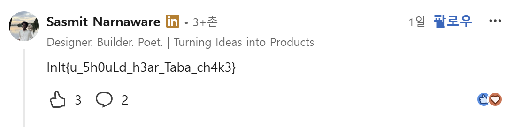

Starting from the Challenge
The challenge contains the lines 'One doll lied, the others watched...and the rizz from ncreeps ran wild for a while.', 'Twelve eyes blinked, but only one saw the post.', 'It wasn’t tagged, it wasn’t liked...it just... coast.', and 'Find the alias stitched beneath broken threads.' There is no direct file or target URL. I treated it as an OSINT(Open-Source Intelligence) challenge about tracing public accounts and posts, and began by searching for the names in the verse.
ncreeps can be found as the name of a public team, while rizz may be part of a username. I started with these searchable, distinctive strings.
1. From nCreeps to Rishabh
nCreeps on GitHub had 12 followers at the time. Following the connections of the public member Snip3R69 led me to rizzzabh-06, and I investigated the public accounts connected to the profile name Rishabh Raj Singh.
I did not find a post directly connecting Dollmaker, Reid, and Hoffman on nCreeps' Instagram or Threads accounts, or on the public profiles of its followers.
2. Where the Threads Post Hypothesis Stalled
Rishabh's Threads account had a retrospective post about a Goa event, a coastal photograph, zero likes, and the alias rizzabh in the text. I considered this as a candidate by connecting it with 'It wasn’t tagged, it wasn’t liked...it just... coast.' and 'Read between lines. That’s where the doll bled.' However, both InIt{rizzabh} and Init{rizzabh} were rejected when submitted.
I also found no mention of Hoffman in 28 public GitHub repositories or co-author records, leaving no supporting connection for the interpretation that Hoffman was a code collaborator.
3. Re-reading the names Reid and Hoffman
The remaining line was 'Between Reid‘s words and Hoffman’s code, I buried her death.'
Q: What changes if
ReidandHoffmanare read as one person's name?
Reid Hoffman is a co-founder of LinkedIn, which turns the line into a platform clue. I followed the connection between Rishabh's portfolio and LinkedIn profile and checked the public posts.
4. Finding the string in a LinkedIn comment
The public JSON-LD(JavaScript Object Notation for Linked Data) for the VAPT Center post included some of its comments. There I found an InIt-formatted string left by Sasmit Narnaware.

I submitted the InIt string and confirmed it was Correct.
Final Flag
InIt{u_5h0uLd_h3ar_Taba_ch4k3}
Summary
- Distinctive name:
ncreepsleads through public GitHub connections to Rishabh. - Platform clue: Reading
Reid Hoffmanas one name points to LinkedIn. - Post trail: A public comment on the VAPT Center post contains the InIt string.
- Search ncreeps
- GitHub connections
- Rishabh public profiles
- Reid Hoffman → LinkedIn
- VAPT Center post
- Sasmit comment → flag
Afterthoughts
I found Rishabh through accounts connected to nCreeps, then followed the trail to Sasmit's comment on LinkedIn and recovered the flag. I still could not tell whom doll referred to in the challenge. I spent a while trying to identify that person first, thinking it would unlock the next clue. I would like to see how other players interpreted doll in their write-ups.